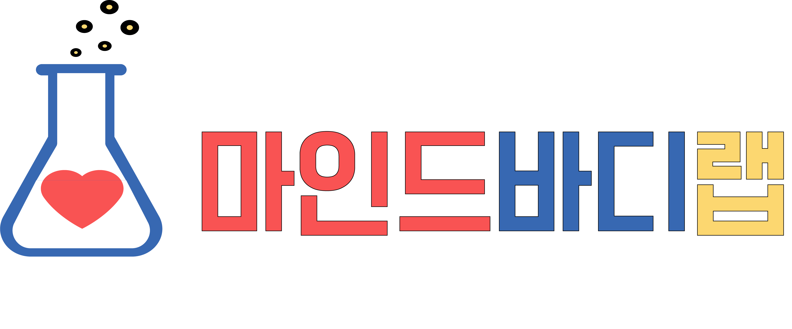

최면상담센터
심리 / 전생 / 최면 / 상담 / 무의식
마인드바디랩
마인드바디랩은 전문 최면상담 센터입니다.
최면 상담으로 병든 마음과 정신적 문제를 치유하고 있습니다.
심리 / 전생 / 최면 / 상담 / 무의식
마인드바디랩은 전문 최면상담 센터입니다.
최면 상담으로 병든 마음과 정신적 문제를 치유하고 있습니다.
오직 나에게만 일어나는 이 일, 이유가 있을까?
지금보다 더 나은 삶을 살려면 무엇을 어떻게 해야 할까요?
누군가 이 고민을 해결할 방법을 알려주면 좋을 텐데...
진짜 이 고민은 내 상황을 아는 사람만이 제대로 듣고 이해해 줄 수 있으니까요.
하지만... 근원적으로 고민은 남아 있을 수 있습니다.
왜냐하면 나도 모르게, 무의식적으로 내가 힘들어하는 진짜 이유를 무의식은 알고 있기 때문입니다.
그렇기 때문에, 무의식은
답을 알고 있습니다.
문제의 원인을 찾기 위해 어린 시절로 최면 연령 퇴행을 했을 때,
이번 생의 경험이 아닌 다른 생의 경험에서
원인과
답을 찾을 때가 있습니다.
전생 체험과 영성 상담의 가치는 진실이냐 과학이냐가 아닌, 바로 '인간'에 있습니다.
무의식적 문제의 원인을 찾고
최면 상담으로 해결하는 곳 입니다.
마인드바디랩
마인드바디랩은 최면, NLP를 활용하여
회복탄력성 증대, 무의식의 변화를 시키는
방법에 최선을 다하고 있습니다.
최면 상담 설명, 상담 비용, 예약 방법 등 안내
최면은 일상적인 의식 상태와는 다른
특별한 심리 상태를 의미합니다.
이는 깨어 있으면서도 주의력이 매우 집중돼
주변 환경에 대한 인식이 감소하는 상태입니다.
하지만 최면가의 암시 제안에는 더 잘 반응하는
상태입니다.
최면 상태에서는
사람이 겉보기엔 잠든 것 같지만
실제로는 깨어 있어 내면의 감정과
기억에
깊이 접근할 수 있습니다.
이를 통해 평소에는 쉽게 접근하지 못했던
심리적 자원을 활용할 수 있게 됩니다.
최면 중에는 비판적 사고가 줄고,
제안을 쉽게 받아 심리 치료에 활용됩니다.
의학적으로 최면은 단순한 수면 상태가 아니라
특별한 의식 상태로, 이완과 집중이 강화되어
통증 관리나 스트레스 완화 등에 효과적으로
사용됩니다.
최면은 최면가의 강요로 이끌어 가는 것은 불가합니다.
피 최면자의 자발적 협조에 의한
상호작용 과정으로 최면 상태가 유지될 수 있습니다.
즉, 의식이 있는 상태이며
자신의 의지와 의식에 의해 최면가의 말에
대답과 행동을 하는 상태입니다.
최면은 의식이 있으면서
집중력을 높여 심리적 치유에
도움을 주는 방법입니다.
최면은 마술이나 미신적 현상이 아니라,
과학적으로 연구되고 있는 심리-생리학적 현상입니다.
상담은 심리학적 기법으로
내담자를 돕는 치유적
관계입니다.
심리상담은 정신 건강을 증진하고 삶의 질을 높이는 것을 목표로 합니다.
내담자가 자신의 감정과 문제를 이해하고 해결할 수 있도록 도움을 줍니다.
상담가는 내담자를 비판하지 않고
공감하며 경청을 합니다.
내담자 스스로가 문제를 해결할 수 있도록 도움을 줍니다.
심리상담은 현재 문제를 해결하고, 자아 성장을 도와 삶의 질을 높이며,
스트레스
관리와 대인관계 개선을 통해 전반적인 정신 건강을 유지하고,
미래의 문제를 예방하는 데
도움을 줍니다.
심리상담은 전문가와 함께
내면을 탐색하고 성장하여
삶의 질을
높여가는 과정입니다.
무의식은 우리가 의식하지 못하는
복잡한 정신 과정으로,
행동과 감정에 큰 영향을
미칩니다.
무의식은 의식 밖에서
우리의 결정과 행동에 영향을 줍니다.
무의식은 지능적 적응 시스템으로
생존에 중요한 역할을 합니다.
무의식은
꿈, 예술 등에서 드러나며
프로이드와 같은 정신분석 학자들은
이를 통해 무의식을 탐구하려 했습니다.
최면은 무의식에 접근해
기억과 감정을 변화시킵니다.
한국 심리학은
'한'과 같은 문화적 정서가
무의식에 작용하고,
집단 무의식을 통해 공유된
문화와 상징이
개인의 무의식에 영향을 준다고 봅니다.
심리상담에서는
무의식을 탐색하고 이해하는것이
치료에 중요한 역할을 할 수 있다고
보고 있습니다.
무의식은 행동과 감정에 영향을 주며,
정신 건강과 성장에 중요합니다.
무의식은 행동과 감정에 큰 영향을
주어
심리상담에서 중요합니다.
무의식의 중요성은 다음과 같은
여러 측면에서 나타납니다.
무의식은 심리 치료와 치유에
핵심적인
요소입니다.
최면은 무의식에 접근해
행동과 감정에
영향을 줍니다.
최면은 무의식에
접근할 수 있는 도구입니다.
일반 상담이 아닌 최면 상담을
선택하면
좋은 이유는 다음과 같습니다.
결론적으로,
최면 상담은 문제와 개인에 따라
더
효과적입니다.
최면 상담은 전문가가 최면 상태로
내담자를 이끌어 치유하는 방법입니다.
최면 상담은 무의식을 촉진해
심리 변화를 이끌어냅니다.
최면 상태는 집중과 몰입이 높은
심리 상태입니다.
최면 상담은 무의식에 접근해
정신 건강을 돕습니다.
최면 상담은
다양한 심리적, 정서적
문제에 적용될 수 있습니다.
불안, 우울 등 다양한 문제와
심리적 성장에
최면을 활용할 수 있습니다.
최면은 피최면자의
자발적 참여와 협력이 필요합니다.
최면 중 피최면자의
윤리와 가치가 존중되며
최면가의 강압적 암시를
받을 수 없습니다.
암시는 피최면자 스스로의 수용으로
받아들여지게 되는 것입니다.
결론적으로,
최면 상담은 무의식에 접근해
자기 이해와 성장을 돕습니다.
이로 인하여
심리적 문제를
스스로 치유하게 합니다.
최면은 만병통치약이 아닙니다.
실제로 최면 상담을 진행하다 보면 최면 상담을 찾는 많은 내담자들은 최면 한
번으로 다 해결될 것으로 기대를 하고 최면 상담 센터를 방문합니다. 그리고 최면 상담가가 모든 것을 알아서 다 해줄 것이라는 생각과 믿음을 갖고 최면 상담에 임하시곤 합니다. 최면 상담을
찾는 내담자들의 이러한 생각과 믿음을 갖는 것을 저는 충분히 이해하고 있습니다.
그런데 안타깝게도 최면은 만병통치약이 아닙니다. 그리고 최면 상담가는 내담자의 모든 것을
꿰뚫어 보는 독심술사의 능력을 갖고 있지 않습니다.
물론 단 한 번의 최면으로 극적인 효과를 보는 사례들도 분명히 있습니다. 그리고 최면 상담가의 유도문과 암시에 의해
내담자의 심리적 문제가 잘 치유되는 경우도 있습니다.
하지만 이런 사례는 최면 감수성이 좋은 내담자들의 일부 사례들입니다.
최면 상담은 내담자가 변화를
원하는 상황에서 무의식적 원인으로 그 변화를 가로막고 있는 벽을 최면 상담가가 함께 협응을 통해서 함께 찾아가고 내담자가 갖고 있는 무의식적 장애물인 벽을 넘어 원하는 상태에 이르게
도움을 주는 조력자의 역할을 합니다.
즉 최면 상담 세션을 진행할 때 내담자의 적극적이고 능동적인 의지와 협조가 있어야 원하는 결과를 얻을 수 있다는 이야기를 드리고
싶습니다.
최면 상담을 찾는 모든 내담자들이 '최면상담사가 내담자에게 꼭 전하고 싶은 말'의 글을 읽고 최면 상담을 받으실 수 있으면 좋겠습니다.
이 글을 읽으면
좀 더 좋은 치료 효과를 얻을 수 있을 것입니다. 왜냐하면 내담자의 상담에 임하는 마음상태와 생각이 상담에서 제일 중요하기 때문입니다.
핵심 가치 – 내담자의 행복 추구
핵심 가치 – 무의식의 긍정적 활용
핵심 가치 – 의식과 무의식의 조화
슬로건
내담자의 마음
지도를
함께 그리는 여정
당신의 마음을 찾아가는
여정,
최면 전문 상담가 : 김현준 센터장
1:1 맞춤형 최면 상담으로 개인의 문제를 깊이 있게 다룹니다.
전생 회귀를 통해 현재 문제의 근본 원인을 찾아 해결합니다.
과거의 상처와 트라우마를 최면을 통해 치유합니다.

보유 라이센스 및 이수 프로그램
서울특별시 송파구 중대로 97 5층
전화: 070-7954-3170
상담문의: 노란색 말풍선으로 언제든지 문의 하세요! :)
© 2025 (주)마인드바디랩. All Rights Reserved.